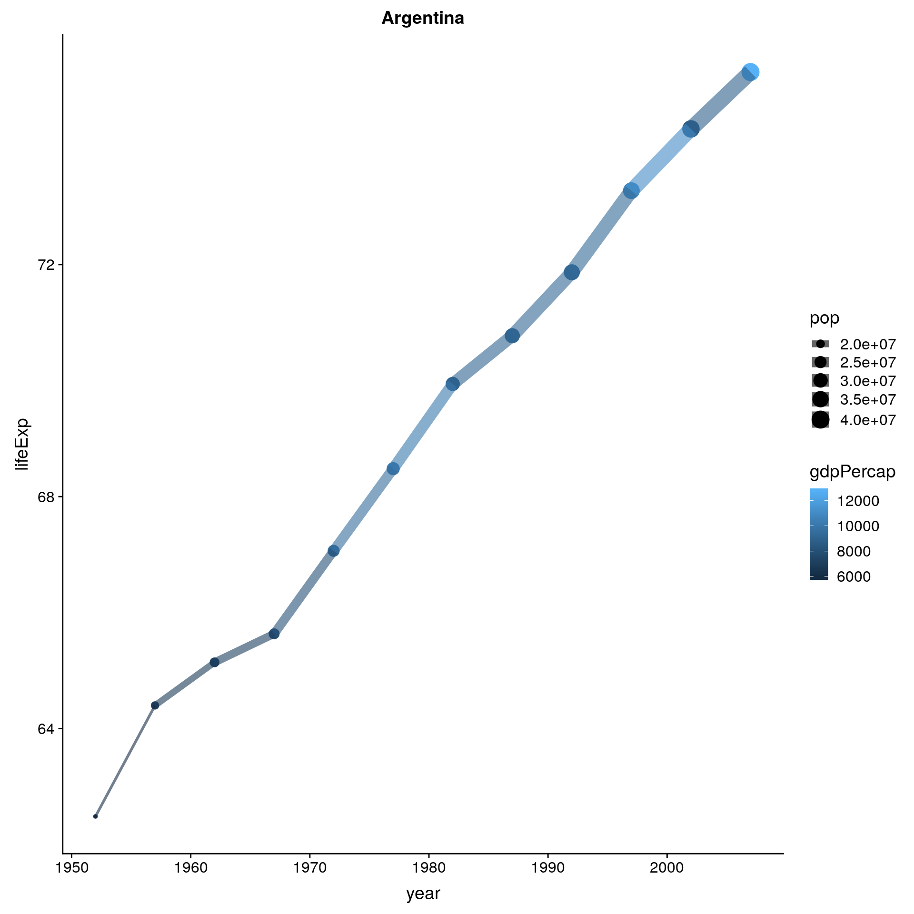
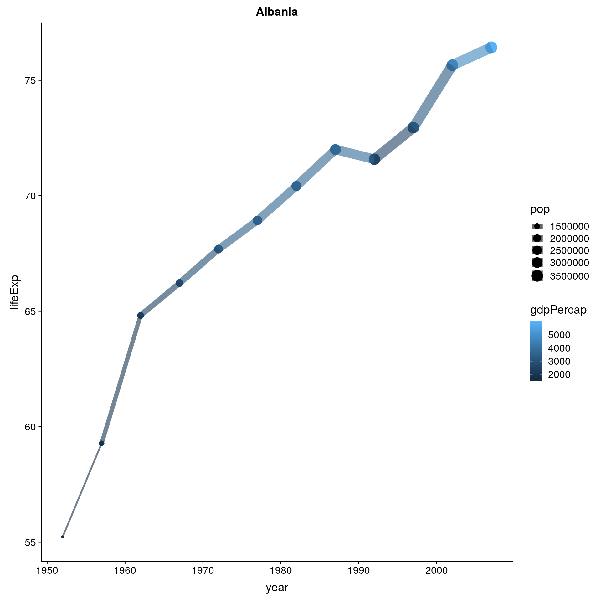

7.2 Práctica Guiada
library(fs)
library(tidyverse)
library(openxlsx)
library(glue)7.2.1 Ejemplo 1: Iterando en la EPH
Lo primero que necesitamos es definir un vector o lista sobre el que iterar.
Por ejemplo, podemos armar un vector con los path a las bases individuales, con el comando fs::dir_ls
bases_individuales_path <- dir_ls(path = '../fuentes/', regexp= 'individual')
bases_individuales_path## ../fuentes/usu_individual_t119.txt ../fuentes/usu_individual_t418.txtLuego, como en la función que usamos para leer las bases definimos muchos parametros, nos podemos armar una función wrapper que sólo necesite un parámetro, y que simplifique la escritura del map
leer_base_eph <- function(path) {
read.table(path,sep=";", dec=",", header = TRUE, fill = TRUE) %>%
select(ANO4,TRIMESTRE,REGION,P21,CH04, CH06)
}
bases_df <- tibble(bases_individuales_path) %>%
mutate(base = map(bases_individuales_path, leer_base_eph))bases_df## # A tibble: 2 x 2
## bases_individuales_path base
## <fs::path> <list>
## 1 ../fuentes/usu_individual_t119.txt <df[,6] [59,369 × 6]>
## 2 ../fuentes/usu_individual_t418.txt <df[,6] [57,418 × 6]>El resultado es un DF donde la columna base tiene en cada fila, otro DF con la base de la EPH de ese período. Esto es lo que llamamos un nested DF o dataframe nesteado pa les pibes.
Si queremos juntar todo, podemos usar unnest()
bases_df <- bases_df %>% unnest()
bases_df## # A tibble: 116,787 x 7
## bases_individuales_path ANO4 TRIMESTRE REGION P21 CH04
## <fs::path> <int> <int> <int> <int> <int>
## 1 ../fuentes/usu_individual_t119.txt 2019 1 41 0 2
## 2 ../fuentes/usu_individual_t119.txt 2019 1 41 0 2
## 3 ../fuentes/usu_individual_t119.txt 2019 1 41 0 1
## 4 ../fuentes/usu_individual_t119.txt 2019 1 41 5000 2
## 5 ../fuentes/usu_individual_t119.txt 2019 1 41 0 2
## 6 ../fuentes/usu_individual_t119.txt 2019 1 41 8000 1
## 7 ../fuentes/usu_individual_t119.txt 2019 1 41 0 1
## 8 ../fuentes/usu_individual_t119.txt 2019 1 41 0 2
## 9 ../fuentes/usu_individual_t119.txt 2019 1 41 0 2
## 10 ../fuentes/usu_individual_t119.txt 2019 1 41 3000 1
## # … with 116,777 more rows, and 1 more variable: CH06 <int>¿Qué pasa si los DF que tenemos nesteados no tienen la misma cantidad de columnas?
Esto mismo lo podemos usar para fragmentar el datastet por alguna variable, con el group_by()
bases_df %>%
group_by(REGION) %>%
nest()## # A tibble: 6 x 2
## REGION data
## <int> <list>
## 1 41 <tibble [11,509 × 6]>
## 2 44 <tibble [14,204 × 6]>
## 3 42 <tibble [11,150 × 6]>
## 4 43 <tibble [34,702 × 6]>
## 5 40 <tibble [24,432 × 6]>
## 6 1 <tibble [20,790 × 6]>Así, para cada región tenemos un DF.
¿ De qué sirve todo esto?
No todo en la vida es un Dataframe. Hay estucturas de datos que no se pueden normalizar a filas y columnas. En esos casos recurríamos tradicionalmente a los loops. Con MAP podemos tener los elementos agrupados en un sólo objeto y aún conservar sus formas diferentes.
7.2.2 Ejemplo 2. Regresión lineal
Si bien no nos vamos a meter en el detalle del modelo lineal hoy, es útil usarlo como ejemplo de lo que podemos hacer con MAP.
Planteamos el modelo \[ P21 = \beta_0 + \beta_1*CH04 + \beta_2*CH06 \] Osea, un modleo que explica el ingreso según sexo y edad
lmfit <- lm(P21~factor(CH04)+CH06,data = bases_df)
summary(lmfit)##
## Call:
## lm(formula = P21 ~ factor(CH04) + CH06, data = bases_df)
##
## Residuals:
## Min 1Q Median 3Q Max
## -15472 -6606 -3367 2148 590198
##
## Coefficients:
## Estimate Std. Error t value Pr(>|t|)
## (Intercept) 4853.196 74.509 65.14 <2e-16 ***
## factor(CH04)2 -4063.112 72.200 -56.27 <2e-16 ***
## CH06 103.095 1.612 63.97 <2e-16 ***
## ---
## Signif. codes: 0 '***' 0.001 '**' 0.01 '*' 0.05 '.' 0.1 ' ' 1
##
## Residual standard error: 12300 on 116784 degrees of freedom
## Multiple R-squared: 0.05511, Adjusted R-squared: 0.0551
## F-statistic: 3406 on 2 and 116784 DF, p-value: < 2.2e-16(al final de la clase podemos charlar sobre los resultados, si hay interés :-) )
De forma Tidy, la librería broom nos da los resultados en un DF.
broom::tidy(lmfit)## # A tibble: 3 x 5
## term estimate std.error statistic p.value
## <chr> <dbl> <dbl> <dbl> <dbl>
## 1 (Intercept) 4853. 74.5 65.1 0
## 2 factor(CH04)2 -4063. 72.2 -56.3 0
## 3 CH06 103. 1.61 64.0 0Si lo queremos hacer por region
7.2.2.1 Loopeando
resultados <- tibble()
for (region in unique(bases_df$REGION)) {
data <- bases_df %>%
filter(REGION==region)
lmfit <- lm(P21~factor(CH04)+CH06,data = data)
lmtidy <- broom::tidy(lmfit)
lmtidy$region <- region
resultados <- bind_rows(resultados,lmtidy)
}
resultados## # A tibble: 18 x 6
## term estimate std.error statistic p.value region
## <chr> <dbl> <dbl> <dbl> <dbl> <int>
## 1 (Intercept) 3768. 185. 20.3 3.15e- 90 41
## 2 factor(CH04)2 -3814. 180. -21.2 6.00e- 98 41
## 3 CH06 106. 4.18 25.3 1.12e-137 41
## 4 (Intercept) 7156. 291. 24.6 1.09e-130 44
## 5 factor(CH04)2 -5938. 278. -21.4 1.42e- 99 44
## 6 CH06 145. 6.32 23.0 1.40e-114 44
## 7 (Intercept) 4930. 231. 21.4 2.15e- 99 42
## 8 factor(CH04)2 -4007. 224. -17.9 1.71e- 70 42
## 9 CH06 97.8 4.95 19.7 2.68e- 85 42
## 10 (Intercept) 5107. 131. 39.0 0. 43
## 11 factor(CH04)2 -3949. 127. -31.1 5.02e-209 43
## 12 CH06 83.5 2.78 30.0 3.87e-195 43
## 13 (Intercept) 3329. 128. 26.0 4.12e-147 40
## 14 factor(CH04)2 -3239. 125. -25.9 3.74e-146 40
## 15 CH06 122. 2.89 42.2 0. 40
## 16 (Intercept) 5196. 197. 26.4 3.45e-151 1
## 17 factor(CH04)2 -4051. 189. -21.4 1.80e-100 1
## 18 CH06 88.2 4.12 21.4 1.98e-100 17.2.2.2 Usando MAP
Primero me armo una funcion que me simplifica el codigo
fun<-function(porcion,grupo) { broom::tidy(lm(P21~factor(CH04)+CH06,data = porcion))}bases_df_lm <- bases_df %>%
group_by(REGION) %>%
nest() %>%
mutate(lm = map(data,fun))
bases_df_lm## # A tibble: 6 x 3
## REGION data lm
## <int> <list> <list>
## 1 41 <tibble [11,509 × 6]> <tibble [3 × 5]>
## 2 44 <tibble [14,204 × 6]> <tibble [3 × 5]>
## 3 42 <tibble [11,150 × 6]> <tibble [3 × 5]>
## 4 43 <tibble [34,702 × 6]> <tibble [3 × 5]>
## 5 40 <tibble [24,432 × 6]> <tibble [3 × 5]>
## 6 1 <tibble [20,790 × 6]> <tibble [3 × 5]>bases_df_lm %>%
unnest(lm)## # A tibble: 18 x 6
## REGION term estimate std.error statistic p.value
## <int> <chr> <dbl> <dbl> <dbl> <dbl>
## 1 41 (Intercept) 3768. 185. 20.3 3.15e- 90
## 2 41 factor(CH04)2 -3814. 180. -21.2 6.00e- 98
## 3 41 CH06 106. 4.18 25.3 1.12e-137
## 4 44 (Intercept) 7156. 291. 24.6 1.09e-130
## 5 44 factor(CH04)2 -5938. 278. -21.4 1.42e- 99
## 6 44 CH06 145. 6.32 23.0 1.40e-114
## 7 42 (Intercept) 4930. 231. 21.4 2.15e- 99
## 8 42 factor(CH04)2 -4007. 224. -17.9 1.71e- 70
## 9 42 CH06 97.8 4.95 19.7 2.68e- 85
## 10 43 (Intercept) 5107. 131. 39.0 0.
## 11 43 factor(CH04)2 -3949. 127. -31.1 5.02e-209
## 12 43 CH06 83.5 2.78 30.0 3.87e-195
## 13 40 (Intercept) 3329. 128. 26.0 4.12e-147
## 14 40 factor(CH04)2 -3239. 125. -25.9 3.74e-146
## 15 40 CH06 122. 2.89 42.2 0.
## 16 1 (Intercept) 5196. 197. 26.4 3.45e-151
## 17 1 factor(CH04)2 -4051. 189. -21.4 1.80e-100
## 18 1 CH06 88.2 4.12 21.4 1.98e-100O incluso más facil, utilizando group_modify (que es un atajo que solo acepta DF)
bases_df %>%
group_by(REGION) %>%
group_modify(fun)## # A tibble: 18 x 6
## # Groups: REGION [6]
## REGION term estimate std.error statistic p.value
## <int> <chr> <dbl> <dbl> <dbl> <dbl>
## 1 1 (Intercept) 5196. 197. 26.4 3.45e-151
## 2 1 factor(CH04)2 -4051. 189. -21.4 1.80e-100
## 3 1 CH06 88.2 4.12 21.4 1.98e-100
## 4 40 (Intercept) 3329. 128. 26.0 4.12e-147
## 5 40 factor(CH04)2 -3239. 125. -25.9 3.74e-146
## 6 40 CH06 122. 2.89 42.2 0.
## 7 41 (Intercept) 3768. 185. 20.3 3.15e- 90
## 8 41 factor(CH04)2 -3814. 180. -21.2 6.00e- 98
## 9 41 CH06 106. 4.18 25.3 1.12e-137
## 10 42 (Intercept) 4930. 231. 21.4 2.15e- 99
## 11 42 factor(CH04)2 -4007. 224. -17.9 1.71e- 70
## 12 42 CH06 97.8 4.95 19.7 2.68e- 85
## 13 43 (Intercept) 5107. 131. 39.0 0.
## 14 43 factor(CH04)2 -3949. 127. -31.1 5.02e-209
## 15 43 CH06 83.5 2.78 30.0 3.87e-195
## 16 44 (Intercept) 7156. 291. 24.6 1.09e-130
## 17 44 factor(CH04)2 -5938. 278. -21.4 1.42e- 99
## 18 44 CH06 145. 6.32 23.0 1.40e-114Pero MAP sirve para operar con cualquier objeto de R.
Por ejemplo podemos guardar el objeto S3:lm que es la regresion lineal entrenada. Ese objeto no es ni un vector, ni una lista, ni un DF. No es una estructura de datos, sino que es algo distinto, con propiedades como predict() para predecir, el summary() que vimos, etc.
fun<-function(porcion,grupo) { lm(P21~factor(CH04)+CH06,data = porcion)}
bases_df %>%
group_by(REGION) %>%
nest() %>%
mutate(lm = map(data,fun))## # A tibble: 6 x 3
## REGION data lm
## <int> <list> <list>
## 1 41 <tibble [11,509 × 6]> <lm>
## 2 44 <tibble [14,204 × 6]> <lm>
## 3 42 <tibble [11,150 × 6]> <lm>
## 4 43 <tibble [34,702 × 6]> <lm>
## 5 40 <tibble [24,432 × 6]> <lm>
## 6 1 <tibble [20,790 × 6]> <lm>7.2.3 Ejemplo 3: Gráficos en serie
Veamos un tercer ejemplo con otra base de datos que ya conocemos: Gapminder, que muestra algunos datos sobre la población de los países por año.
El objetivo de este ejercicio es hacer un gráfico por país de forma automática.
- Primero veamos los datos
library(gapminder)
gapminder_unfiltered %>%
sample_n(10)## # A tibble: 10 x 6
## country continent year lifeExp pop gdpPercap
## <fct> <fct> <int> <dbl> <int> <dbl>
## 1 Norway Europe 1964 73.6 3694339 14440.
## 2 Togo Africa 1962 43.9 1528098 1068.
## 3 Austria Europe 1970 70.1 7467086 15079.
## 4 Congo, Dem. Rep. Africa 1957 40.7 15577932 906.
## 5 Qatar Asia 1972 62.1 131794 81069.
## 6 Bulgaria Europe 1986 71.6 8958770 8236.
## 7 Poland Europe 1963 68.6 30662122 5597.
## 8 Zimbabwe Africa 1957 50.5 3646340 519.
## 9 Uganda Africa 2007 51.5 29170398 1056.
## 10 Mongolia Asia 2007 66.8 2874127 3096.la base tiene la siguiente info:
- country: Nombre del país
- continent: Nombre del continente
- year: año
- lifeExp: Esperanza de vida al nacer
- pop: Población
gdpPercap
Vamos a hacer un gráfico sencillo para Argentina
data_argentina <- gapminder_unfiltered %>%
filter(country=='Argentina')
ggplot(data_argentina, aes(year, lifeExp, size= pop, color=gdpPercap))+
geom_point()+
geom_line(alpha=0.6)+
labs(title = unique(data_argentina$country))
- Ahora que tenemos una idea de lo que queremos gráficar lo podemos poner adentro de una función que grafique.
# definimos la función
graficar_pais <- function(data, pais){
ggplot(data, aes(year, lifeExp, size= pop, color=gdpPercap))+
geom_point()+
geom_line(alpha=0.6)+
labs(title = pais)
}probamos la función para un caso
graficar_pais(data_argentina, 'Argentina')- Nos armamos un dataset nesteado
gapminder_nest <- gapminder_unfiltered %>%
group_by(country) %>%
nest()
gapminder_nest %>%
sample_n(10)## # A tibble: 10 x 2
## country data
## <fct> <list>
## 1 Puerto Rico <tibble [13 × 5]>
## 2 Korea, Rep. <tibble [12 × 5]>
## 3 Samoa <tibble [7 × 5]>
## 4 Afghanistan <tibble [12 × 5]>
## 5 Malaysia <tibble [12 × 5]>
## 6 Italy <tibble [56 × 5]>
## 7 French Polynesia <tibble [9 × 5]>
## 8 Slovenia <tibble [32 × 5]>
## 9 United Arab Emirates <tibble [8 × 5]>
## 10 Namibia <tibble [12 × 5]>- Ahora podemos crear una nueva columna que contenga los gráficos
gapminder_nest <- gapminder_nest %>%
mutate(grafico= map2(.x = data, .y = country,.f = graficar_pais))
gapminder_nest %>%
sample_n(10)## # A tibble: 10 x 3
## country data grafico
## <fct> <list> <list>
## 1 Cyprus <tibble [8 × 5]> <gg>
## 2 Somalia <tibble [12 × 5]> <gg>
## 3 Poland <tibble [52 × 5]> <gg>
## 4 Uzbekistan <tibble [4 × 5]> <gg>
## 5 Ecuador <tibble [12 × 5]> <gg>
## 6 Sweden <tibble [58 × 5]> <gg>
## 7 Kenya <tibble [12 × 5]> <gg>
## 8 Ethiopia <tibble [12 × 5]> <gg>
## 9 Guinea-Bissau <tibble [12 × 5]> <gg>
## 10 Portugal <tibble [58 × 5]> <gg>Veamos un ejemplo
gapminder_nest$grafico[2]## [[1]]
Ahora podemos guardar todos los gráficos en un archivo PDF
pdf('../resultados/graficos_gapminder.pdf')
gapminder_nest$grafico
dev.off()